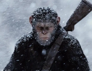

猩球崛起
《猩球崛起》是由鲁伯特·瓦耶特执导，詹姆斯·弗兰科、汤姆·费尔顿、芙蕾达·平托、布莱
恩·考克斯等主演的动作片，于2011年10月28日在中国大陆上映。该片是科幻片《人猿星
球》的前传，讲述了人猿进化为高级智慧生物、进而攻占地球之前的种种际遇的故事。
影片背景
《猩球崛起》是由鲁伯特·瓦耶特执导，詹姆斯·弗兰科、汤姆·费尔顿、芙蕾达·平托、布莱恩·考克斯等主演的动作片，于2011年10月28日在中国大陆上映。
剧情简介
现代的旧金山，基因科学家威尔·罗德曼（詹姆斯·弗兰克饰）为了治疗人类神经萎缩类疾病而研发了一种药品，该药可以治
疗老年痴呆一类的病症，新药在黑猩猩身上做实验时，人们发现可以大幅度提高其智力，症状眼睛变为绿色，智力达到人类水
平，这只试验成功的黑猩猩生下小猩猩后，为了保护其子母性爆发，袭击了工作人员而被射杀。其后研究所被迫对剩下所有黑猩
猩进行了安乐死，研究项目被迫停止。为了救新生的小猩猩，威尔收养了他并起名凯撒（安迪·瑟金斯饰），在喂养凯撒过程中，
因治疗猩猩的伤，威尔·罗德曼遇上了动物学家凯洛琳·阿兰哈（芙蕾达·平托饰）并相恋。
电影评测网